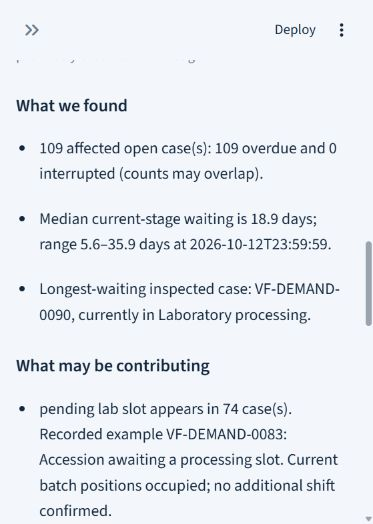

Healthcare Operations & Process Analysis
ScaleFlow
Make delays inspectable
A process-monitoring tool that identifies bottlenecks, inspects recorded delays, and helps prepare a local operational follow-up.
Portfolio prototype · Fictional demonstration data01 / The Business Problem
A diagnostic pathway crosses several process stages. Delays are difficult to explain when current status and recorded history are viewed separately.
My Approach
I mapped the pathway into six measurable intervals and distinguished active case counts from completed turnaround. Investigations then connect delayed cases to their stage history and exception notes, so explanations stay tied to recorded evidence.
What I Built
- Compare Normal Operations, Growing Demand, and Operational Disruption scenarios.
- Inspect active stages, overdue counts, completed turnaround, and individual case histories.
- Investigate detected delays with explicitly labelled, evidence-derived prepared examples.
- Validate Excel uploads and save an editable follow-up with an owner and deadline.
The workflow
How It Works
- 01Read process events→
- 02Identify delays→
- 03Inspect evidence→
- 04Prepare follow-up
Inside the application
Application Preview
The overview placeholder is ready for a desktop capture. The existing mobile screenshot below shows actual recorded delay findings.


Technical Approach
Python, Pandas, and Streamlit support process calculations and the two-page interface. SQLite stores local follow-ups separately from process records. Optional Ollama investigation code offers three read-only tools within a bounded loop. The saved local model verification timed out, so autonomous AI behavior is not claimed as verified.
Scope & limitations
Uses fictional VitaFlow Health data. It supports process investigation, not clinical interpretation or medical priority decisions. Prepared examples are deterministic and labelled. Some delays have no recorded cause; findings require review. No external communication or operational deployment is claimed.
Explore the Project
Links will be added when public versions are ready.